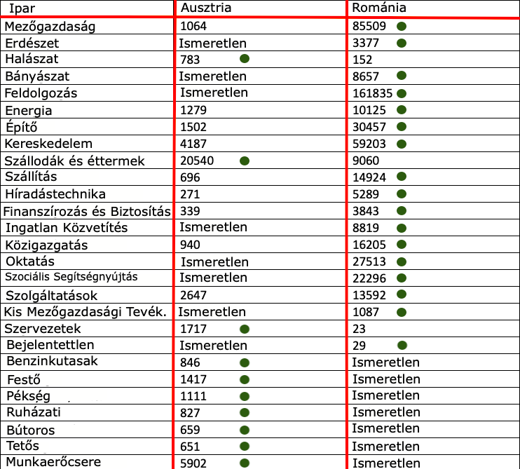

A Magyarok Akik Külföldön Dolgoznak
Ausztria Románia
Foglalkoztatási statisztikák:
339000 magyar dolgozik az EU-ban Magyarországon kívül. 92000 magyar dolgozik Ausztriában.
Munkanélküliség:
MAGYARORSZÁG: 3,4% AUSZTRIA: 4,5% ROMÁNIA: 3,8%
Átlagfizetés:
MAGYARORSZÁG: 12978 €, AUSZTRIA: 47120 €, ROMÁNIA: 9,312 €
Nem igaz hogy az emberek csak felsőoktatással elérhető állásokra miatt hagyják el Magyaroszágot. A biológusoktól (mint Apám) a benzinkutosoküig, az osztrák és a romániai adatok azt mutatják, hogy az iparágak széles körét töltik be a Magyarok.
Tehát: Bárki mehet

Zöld pont = Magasabb az ebben az országban foglalkoztatottak száma ebben az adott iparágban
Sources:Románia információ forrásAusztria információ forrásRománia információ forrásAusztria információ forrás